Other Artists
The Beatles — Abbey Road ★★★★★
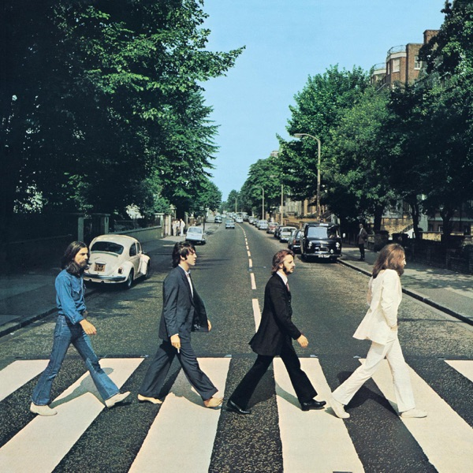
Abbey Road is is The Beatles' 11th LP.
- Come Together ★★★★★
- Something ★★★★★
- Maxwell's Silver Hammer ★★★★★
- Oh! Darling ★★★★★
- Octopus's Garden ★★★★★
- I Want You (She's So Heavy) ★★★★★
- Here Comes The Sun ★★★★★
- Because ★★★★★
- You Never Give Me Your Money ★★★★★
- Mean Mr. Mustard ★★★★★
- Polytheme Pam ★★★★★
- She Came In Through The Bathroom Window ★★★★★
- Golden Slumbers ★★★★★
- Carry That Weight ★★★★★
- The End ★★★★★
- Her Majesty (hidden track) ★★★★★
Bo Burnham — Inside (The Songs) ★★★★★
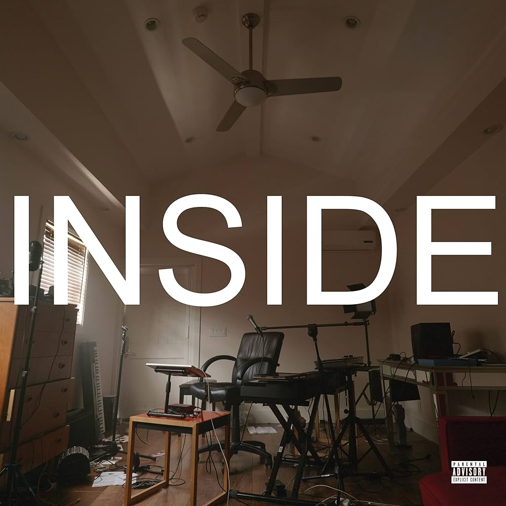
Inside (The Songs) is Bo Burnham's Fourth Album.
- TBR Content ★★★★★
- TBR Comedy ★★★★★
- TBR FaceTime With My Mom (Tonight) ★★★★★
- TBR How The World Works ★★★★★
- TBR White Woman's Instagram ★★★★★
- TBR Unpaid Intern ★★★★★
- TBR Bezos ★★★★★
- "Texting" ★★★★★
- TBR Look Who's Inside Again ★★★★★
- TBR Problematic ★★★★★
- TBR 30 ★★★★★
- TBR Don't Wanna Know ★★★★★
- TBR S@#% ★★★★★
- TBR All Time Low ★★★★★
- TBR Welcome To The Internet ★★★★★
- TBR Bezos II ★★★★★
- TBR That Funny Feeling ★★★★★
- TBR All Eyes On Me ★★★★★
- TBR Goodbye ★★★★★
- TBR Any Day Now ★★★★★
Bo Burnham — The Inside Outtakes ★★★★★
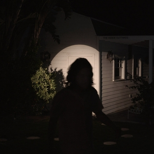
The Inside Outtakes are the outtakes for Bo Burnham's Fourth Album, Inside.
- TBR Bezos III ★★★★★
- TBR The Future ★★★★★
- TBR WTFIGO ★★★★★
- TBR 1985 ★★★★★
- TBR Feel Good ★★★★★
- TBR Five Years ★★★★★
- TBR Biden ★★★★★
- TBR Microwave Popcorn ★★★★★
- TBR Bezos IV ★★★★★
- TBR Spider ★★★★★
- TBR This Isn't a Joke ★★★★★
- TBR All Eyes on Me (The Outtakes Version) ★★★★★
- TBR The Chicken ★★★★★
Lemon Demon — Dinosaurchestra ★★★★★
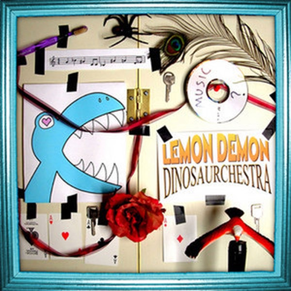
Dinosaurchestra is the 5th LP by Neil Ciciregra under the Pseudonymn Lemon Demon.
- TBR Dinosaurchestra Part One ★★★★★
- TBR Action Movie Hero Boy ★★★★★
- TBR Fine ★★★★★
- TBR Lawnmower ★★★★★
- TBR Stuck ★★★★★
- TBR The Ultimate Showdown of Ultimate Destiny ★★★★★
- TBR Vow of Silence ★★★★★
- TBR Neverending Hum ★★★★★
- TBR Dinosaurchestra Part Two ★★★★★
- TBR Your Imaginary Friend ★★★★★
- TBR Archaeopteryx ★★★★★
- TBR Eyewishes ★★★★★
- TBR Bystanding ★★★★★
- TBR Indie Cindy & the Lo-Fi Lullabies ★★★★★
- TBR Nothing Worth Loving Isn't Askew ★★★★★
- TBR This Hyper World ★★★★★
- TBR Deep in the Ocean ★★★★★
- TBR Dinosaurchestra Part Three ★★★★★
- TBR The Too Much Song ★★★★★
- TBR Stick Stickly ★★★★★
- TBR Being Alone On Valentine's Day ★★★★★
Lemon Demon — View Monster ★★★★★
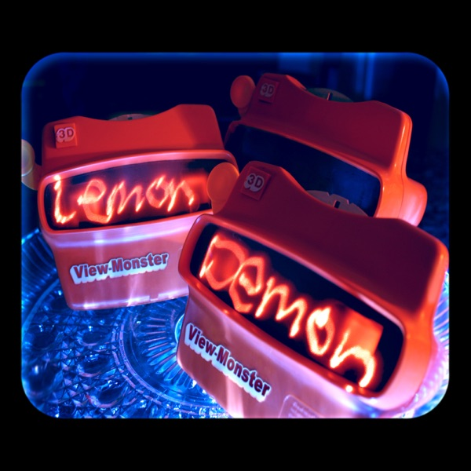
View Monster is the 6th LP by Neil Ciciregra under the Pseudonymn Lemon Demon.
- TBR Kaleidoskull ★★★★★
- TBR Untitled [view-monster] ★★★★★
- TBR Amnesia Was Her Name ★★★★★
- TBR Untitled [hippocampus] ★★★★★
- TBR The Man In Stripes and Glasses ★★★★★
- TBR Untitled [spooky sounds vol 6] ★★★★★
- TBR Marketland ★★★★★
- TBR Untitled [x-ray glasses] ★★★★★
- TBR Gadzooks ★★★★★
- TBR Untitled [prelude to a knife fight] ★★★★★
- TBR Knife Fight ★★★★★
- TBR Untitled [autofocus] ★★★★★
- TBR The Only House That's Not On Fire (Yet) ★★★★★
- TBR Untitled [combs] ★★★★★
- TBR The Ocean ★★★★★
- TBR Untitled [wet hair] ★★★★★
- TBR The Afternoon ★★★★★
- TBR Untitled [afterafternoon] ★★★★★
- TBR Spring Heeled Jack ★★★★★
- TBR Untitled [alternate history] ★★★★★
- TBR Being a Rock Star ★★★★★
- TBR Untitled [like a balloon] ★★★★★
- TBR Ask For Nothing ★★★★★
- TBR Untitled [disconnect] ★★★★★
- TBR The Satirist's Love Song ★★★★★
- TBR Untitled [therapy] ★★★★★
- TBR The Machine ★★★★★
- TBR Untitled [between the frames] ★★★★★
- TBR Bill Watterson ★★★★★
- TBR Untitled [sleeping] ★★★★★
- TBR Something Glowing ★★★★★
- TBR Untitled [finale] ★★★★★
Lemon Demon — Live (Only Not) ★★★★★
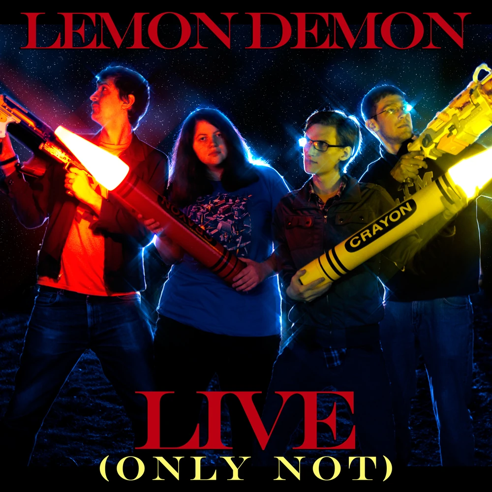
Live (Only Not) is an EP by Neil Ciciregra under the Pseudonymn Lemon Demon.
- TBR Fine ★★★★★
- TBR Bill Watterson ★★★★★
- TBR Stick Stickly ★★★★★
- TBR Ode to Crayola ★★★★★
- TBR I've Got Some Falling to Do ★★★★★
- TBR Spring Heeled Jack ★★★★★
- TBR The Ultimate Showdown of Ultimate Destiny ★★★★★
Lemon Demon — Spirit Phone ★★★★★
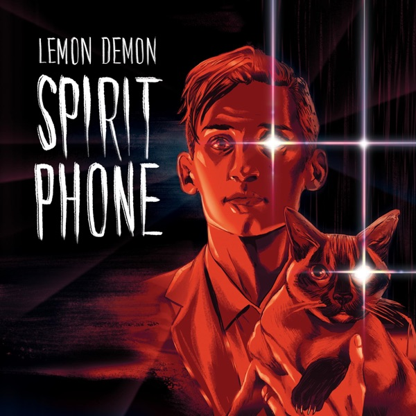
Spirit Phone is the 7th LP by Neil Ciciregra under the Pseudonymn Lemon Demon.
- TBR Lifetime Achievement Award ★★★★★
- TBR Touch-Tone Telephone ★★★★★
- TBR Cabinet Man ★★★★★
- TBR No Eyed Girl ★★★★★
- TBR When He Died ★★★★★
- TBR Sweet Bod ★★★★★
- TBR Eighth Wonder ★★★★★
- TBR Ancient Aliens ★★★★★
- TBR Soft Fuzzy Man ★★★★★
- TBR As Your Father I Expressly Forbid It ★★★★★
- TBR I Earn My Life ★★★★★
- TBR Reaganomics ★★★★★
- TBR Man-Made Object ★★★★★
- TBR Spiral of Ants ★★★★★
Lin Manuel Miranda & The Original Broadway Cast — Hamilton: An American Musical ★★★★★
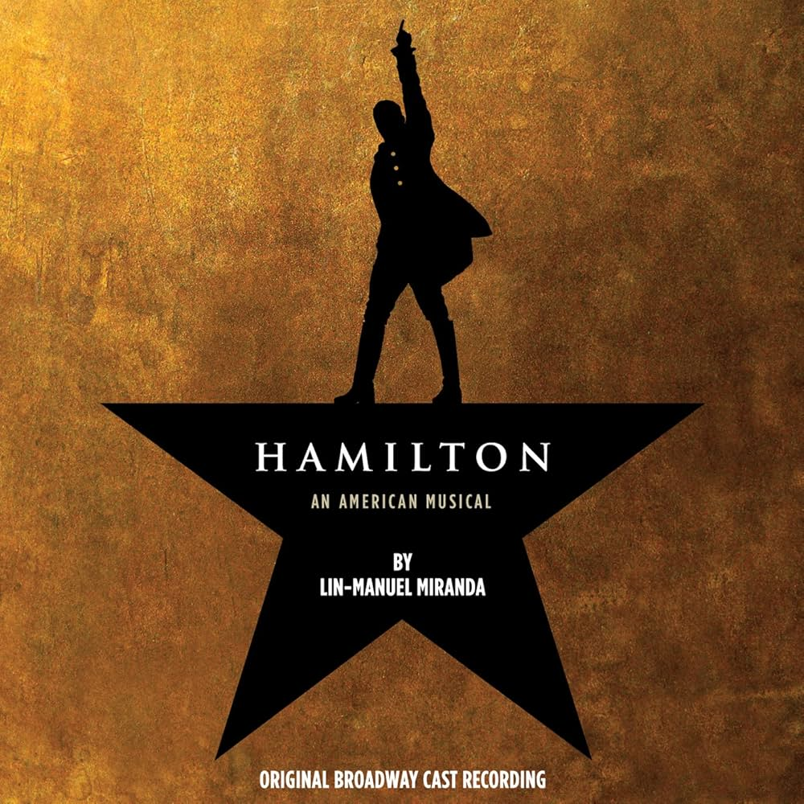
Hamilton: An American Musical is written by Lin Manuel Miranda and is performed by the original Broadway Cast.
- TBR Alexander Hamilton★★★★★
- TBR Aaron Burr, Sir ★★★★★
- TBR My Shot ★★★★★
- TBR The Story of Tonight ★★★★★
- TBR The Schuyler Sisters ★★★★★
- TBR Farmer Refuted ★★★★★
- TBR You'll Be Back ★★★★★
- TBR Right Hand Man ★★★★★
- TBR A Winter's Ball ★★★★★
- TBR Helpless ★★★★★
- TBR Satisfied ★★★★★
- TBR The Story of Tonight (Reprise) ★★★★★
- TBR Wait for It ★★★★★
- TBR Stay Alive ★★★★★
- TBR Ten Duel Commandments ★★★★★
- TBR Meet Me Inside ★★★★★
- TBR That Would Be Enough ★★★★★
- TBR Guns and Ships ★★★★★
- TBR History Has Its Eyes On You ★★★★★
- TBR Yorktown (The World Turned Upside Down) ★★★★★
- TBR What Comes Next? ★★★★★
- TBR Dear Theodosia ★★★★★
- TBR Tomorrow There'll Be More of Us ★★★★★
- TBR Non-Stop ★★★★★
- TBR What'd I Miss★★★★★
- TBR Cabinet Battle #1 ★★★★★
- TBR Take a Break ★★★★★
- TBR Say No to This ★★★★★
- TBR The Room Where It Happens ★★★★★
- TBR Schuyler Defeated ★★★★★
- TBR Cabinet Battle #2 ★★★★★
- TBR Washington On Your Side ★★★★★
- TBR One Last Time ★★★★★
- TBR I Know Him ★★★★★
- TBR The Adams Administration ★★★★★
- TBR We Know ★★★★★
- TBR Hurricane ★★★★★
- TBR The Reynolds Pamphlet ★★★★★
- TBR Burn ★★★★★
- TBR Blow Us All Away ★★★★★
- TBR Stay Alive (Reprise) ★★★★★
- TBR It's Quiet Uptown ★★★★★
- TBR The Election of 1800 ★★★★★
- TBR Your Obedient Servant ★★★★★
- TBR Best of Wives and Best of Women ★★★★★
- TBR The World Was Wide Enough ★★★★★
- TBR Who Lives, Who Dies, Who Tells Your Story ★★★★★
Matthew Taranto — Brawl in the Family: Song Collection ★★★★★
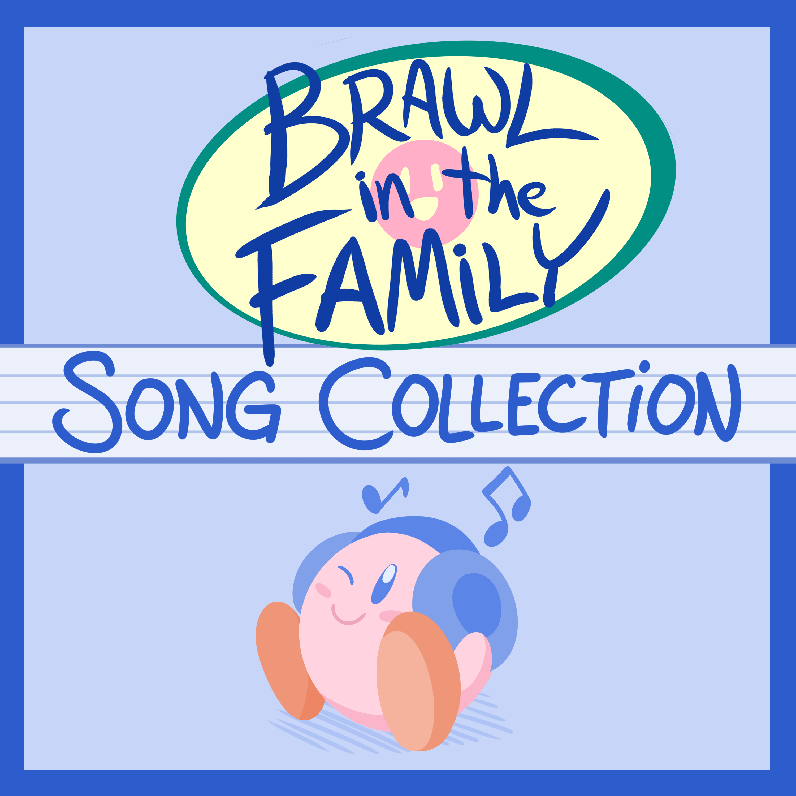
Brawl in the Family: Song Collection is the containing the songs from all the musical parts of Matthew Taranto's comic strip.
- TBR You're a Mean King, Dedede ★★★★★
- TBR Ode to Minions ★★★★★
- TBR Jolly, Happy Jerk ★★★★★
- TBR Carol of the WAA ★★★★★
- TBR A Simple Request ★★★★★
- TBR If It Takes a Lifetime ★★★★★
- TBR Ice World ★★★★★
- TBR The History of Nintendo ★★★★★
- TBR Home ★★★★★
- TBR Prodigal Robot ★★★★★
- TBR Super Carol 64 ★★★★★
- TBR Super Smash Carol ★★★★★
- TBR Plumber's Best Friend ★★★★★
- TBR Eario Jingle ★★★★★
- TBR One Final Song ★★★★★
Matthew Taranto — Brawl in the Family: Song Collection ★★★★★
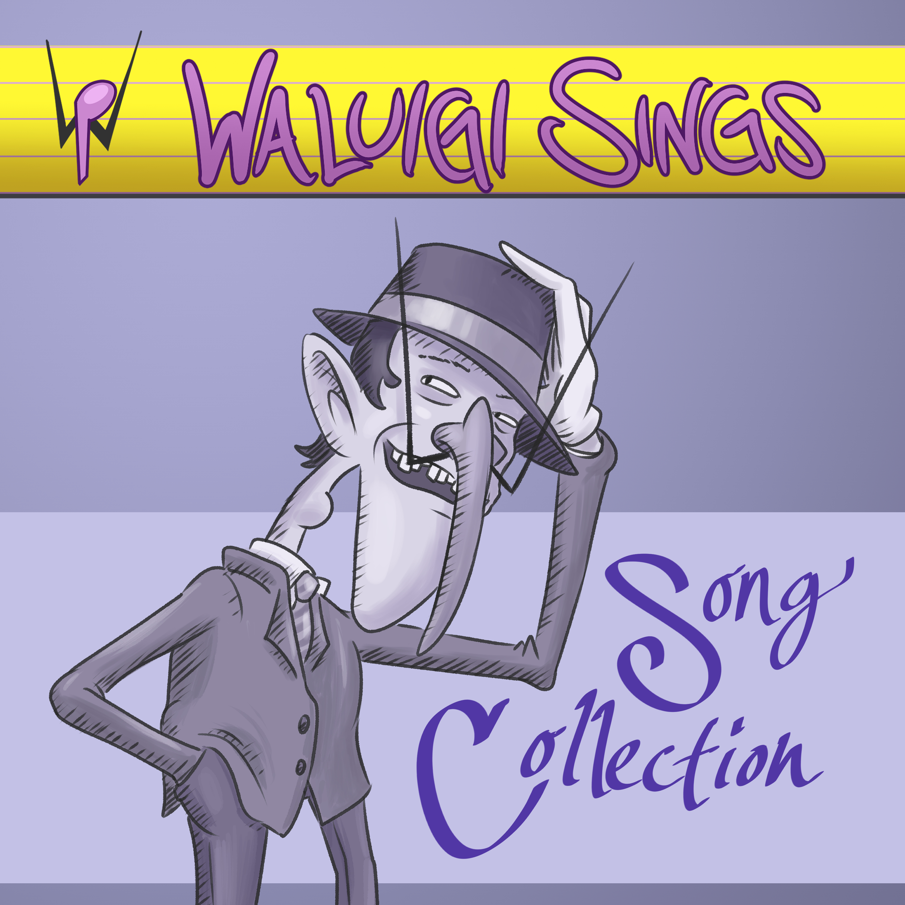
Waluigi Sings: Song Collection is the containing the songs from Matthew Taranto's Waluigi Sings videos.
- TBR Carol of the WAA ★★★★★
- TBR A Wallelujah Chorus ★★★★★
- TBR For the Longest (Waluigi) Time ★★★★★
- TBR WAAn Day More ★★★★★
- TBR Wa-Elegy ★★★★★
- TBR Have Yourself a Merry Little ChristWAAs ★★★★★
- TBR Bohemian WAApsody ★★★★★
- TBR WAAfrica ★★★★★
- TBR Circle of WAA ★★★★★
- TBR Daisies ★★★★★
- TBR Plumbershop Quartet ★★★★★
- TBR Baby, It's WAA Outside ★★★★★
- TBR RainboWAA Connection ★★★★★
- TBR Waluigi Pinball ★★★★★
- TBR My WAA ★★★★★
Matthew Taranto — Bitmusical: World 1 ★★★★★
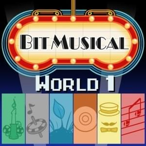
Bitmusical: World 2 is the second EP for Matthew Taranto's Bitmusical Project.
- TBR Ode to Minions (2023) ★★★★★
- TBR One-Note Song ★★★★★
- TBR End of Day ★★★★★
- TBR Pokemaniacs ★★★★★
- TBR Plumbershop Quartet ★★★★★
- TBR Bitmusical Main Theme ★★★★★
Matthew Taranto — Bitmusical: World 2 ★★★★★
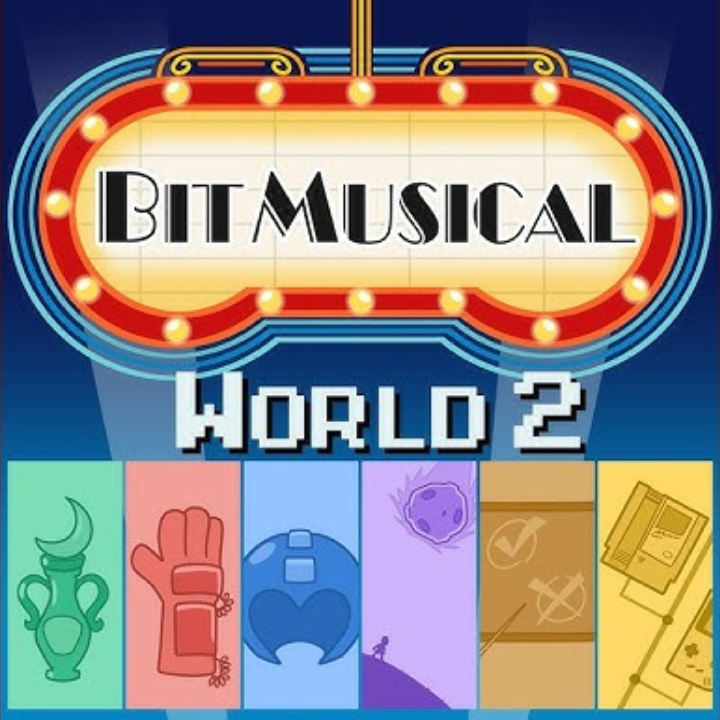
Bitmusical: World 1 is the second EP for Matthew Taranto's Bitmusical Project.
- TBR Megalixir ★★★★★
- TBR Game Genie ★★★★★
- TBR Boss Select ★★★★★
- TBR Kaclang! ★★★★★
- TBR Ganon with One N ★★★★★
- TBR The History of Nintendo 2024 ★★★★★
Rankin Bass — The Hobbit ★★★★★
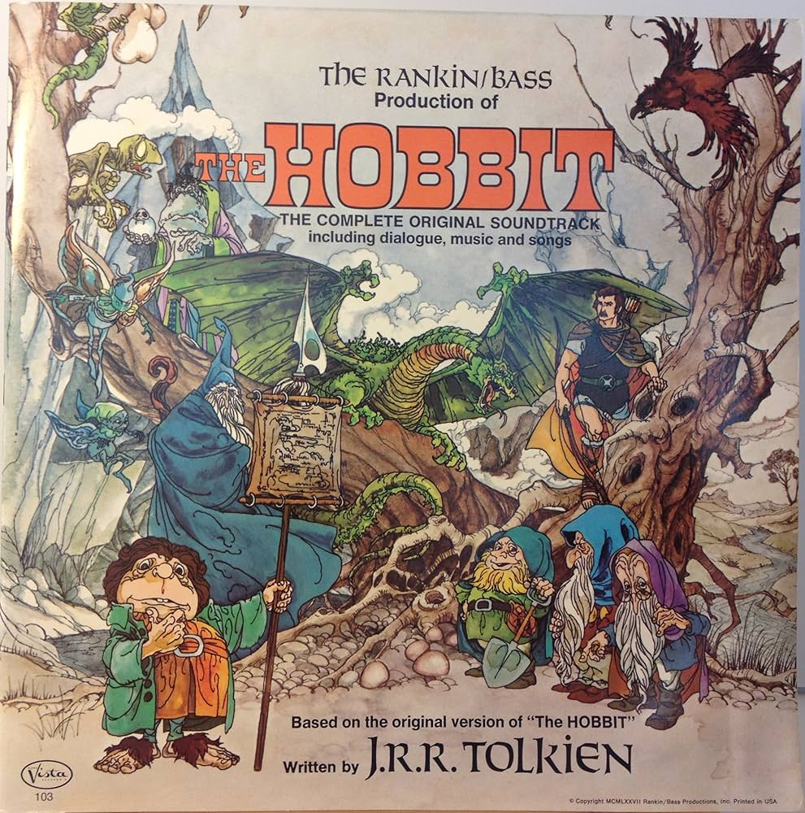
The Hobbit is the soundtrack to Rankin Bass' 1977 TV Special by the same name.
- TBR Gandalf's Reflection ★★★★★
- TBR The Greatest Adventure ★★★★★
- TBR In the Valley, Ha! Ha! ★★★★★
- TBR Down, Down to Goblin Town ★★★★★
- TBR Gollum's Riddle ★★★★★
- TBR Funny Little Things ★★★★★
- TBR Roads ★★★★★
- TBR Old Fat Spider ★★★★★
- TBR Rollin' Down the Hole ★★★★★
- TBR The Mountain King Returns ★★★★★
- TBR In the Valley, Ha! Ha! (Reprise) ★★★★★
- TBR Roads (Instrumental) ★★★★★
- TBR The Greatest Adventure (Instrumental) ★★★★★
Rankin Bass — The Return of the King ★★★★★
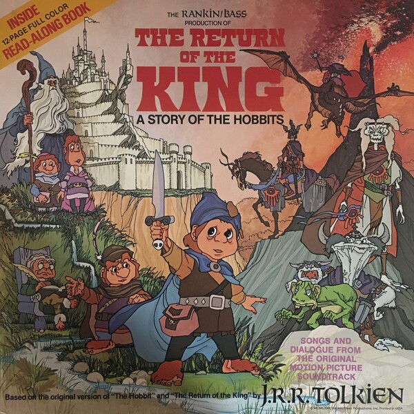
The Return of the King is the soundtrack to Rankin Bass' 1980 TV Special by the same name.
- TBR Frodo of the Nine Fingers ★★★★★
- TBR It's So Easy Not To Try ★★★★★
- TBR The Bearer of the Ring Pt. 1 ★★★★★
- TBR Less can be More ★★★★★
- TBR Where There's a Whip, There's a Way ★★★★★
- TBR Leave Tomorrow Till it Comes ★★★★★
- TBR The Cracks of Doom ★★★★★
- TBR The Bearer of the Ring Pt. 2 ★★★★★
- TBR Towers of the Teeth ★★★★★
- TBR The End Titles ★★★★★
- TBR Roads (Return of the King) ★★★★★
- TBR The End Titles (Instrumental) ★★★★★
U2 — All That You Can't Leave Behind ★★★★★
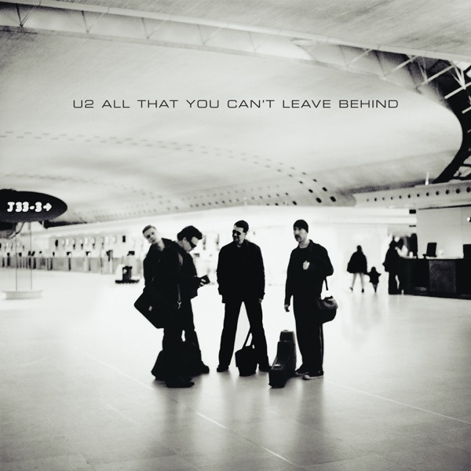
All that You Can't Leave Behind is U2's 10th LP.
- Beautiful Day ★★★★★
- Stuck in a Moment You Can't Get Out Of ★★★★★
- Elevation ★★★★★
- Walk On ★★★★★
- Kite ★★★★★
- In A Little While ★★★★★
- Wild Honey ★★★★★
- Peace On Earth ★★★★★
- When I Look At The World ★★★★★
- New York ★★★★★
- Grace ★★★★★
U2 — How To Dismantle An Atomic Bomb ★★★★★
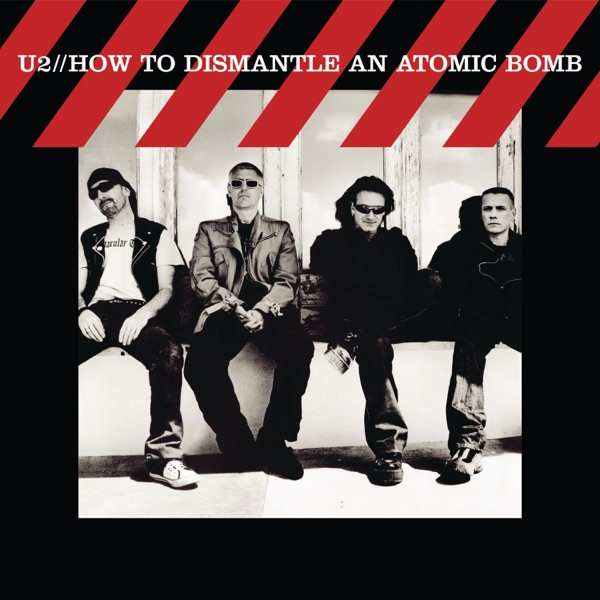
How To Dismantle An Atomic Bomb is is U2's 11th LP.
- Vertigo ★★★★★
- Miracle Drug ★★★★★
- Sometimes You Can't Make It On Your Own ★★★★★
- Love And Peace or Else ★★★★★
- City of Blinding Lights ★★★★★
- All Because Of You ★★★★★
- A Man And A Woman ★★★★★
- Crumbs From Your Table ★★★★★
- One Step Closer ★★★★★
- Original Of The Species ★★★★★
- Yahweh ★★★★★